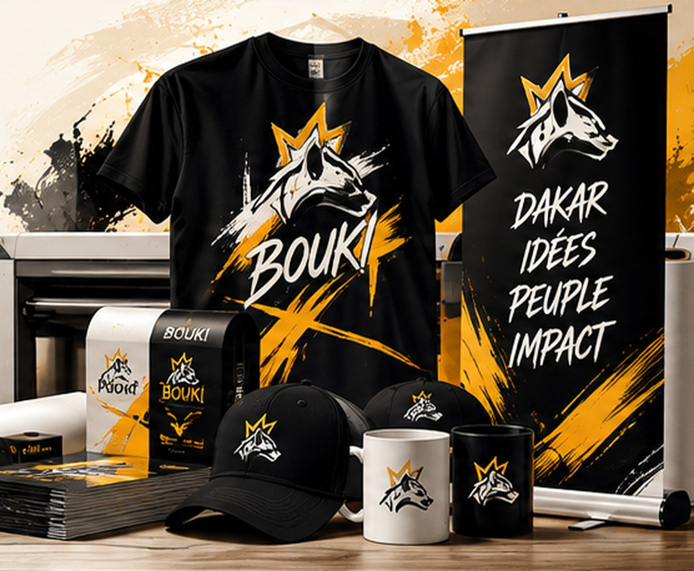
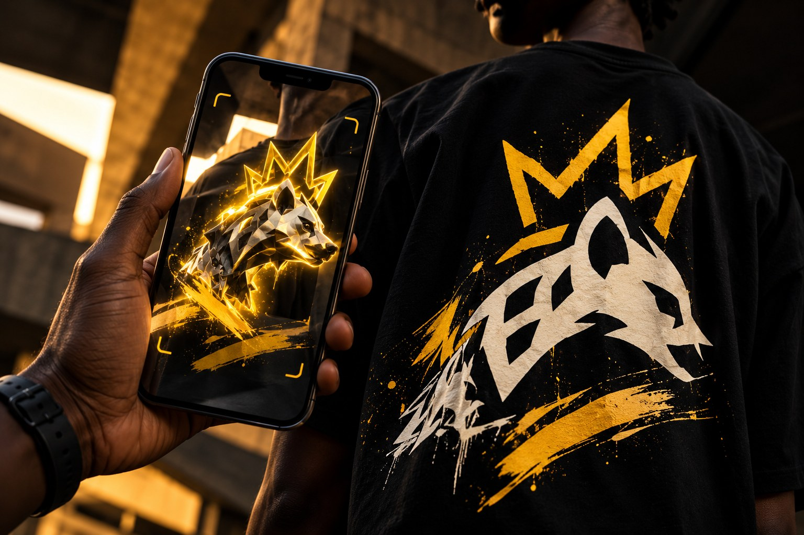

Streetwear & Collections
Des pièces inspirées de nos racines et de la culture sénégalaise. Chaque création raconte une histoire, entre tradition et modernité.
- T-shirts & sweats
- Casquettes, totes & accessoires
- Drops en édition limitée
Streetwear sénégalais · DROP 001
Née à Dakar, BOUKI mêle streetwear, culture sénégalaise et créativité sans frontières. Une hyène, une couronne, un état d’esprit : des pièces qui racontent une histoire et des idées qui prennent vie entre le réel et le digital. Du vêtement à l’expérience interactive, on crée ce qui sort du lot. TECH DOFF.
Streetwear, idées audacieuses et expériences numériques. BOUKI transforme les marques et les projets en identités fortes, expériences interactives et campagnes qui marquent. TECH DOFF.
Découvrir la collectionLe drop · DROP 001
Des pièces en édition limitée, pensées à Dakar et portées partout. Découvre le drop, choisis tes favoris et écris-nous pour réserver.
Prix indicatifs : les prix définitifs sont confirmés sur WhatsApp avant toute commande.
BOUKI · Créativité × Culture × Technologie
Plus qu’une marque streetwear, BOUKI est un écosystème créatif qui conçoit des vêtements, des identités, des expériences interactives et des solutions de communication innovantes pour les marques, entreprises et projets qui veulent marquer leur époque.
Parlons de ton projetDes pièces inspirées de nos racines et de la culture sénégalaise. Chaque création raconte une histoire, entre tradition et modernité.
Nous transformons les idées en marques fortes, cohérentes et mémorables.
Des supports de communication qui ne se contentent pas d’être vus : ils invitent à interagir.
Des supports de communication conçus avec exigence, pour donner vie aux idées et aux marques.
BOUKI s’inscrit dans un écosystème qui valorise la créativité, les compétences numériques et la transmission.
BOUKI PRINT · EXPRESS
Un support à produire rapidement ? Décris ton besoin : on te recontacte pour confirmer la faisabilité, le délai et le devis.

Mode · Culture · Technologie
BOUKI imagine des supports de communication qui ne se contentent pas d’être vus : ils invitent à interagir. Du vêtement au menu, du packaging à l’affiche, une expérience peut se prolonger par le scan, le NFC ou un contenu digital.
Le module AR est une expérience en développement ; la reconnaissance caméra réelle doit être activée et testée avant lancement.
BOUKI LAB · DROP 001Un support imprimé peut devenir une porte vers une animation, une vidéo, une fiche produit ou une expérience augmentée.
Explorer les pièces ↗Menus, cartes, affiches et supports NFC/QR peuvent guider vers des contenus, formulaires ou catalogues adaptés.
Comment ça marche ↗Relie tes supports physiques à des pages web, des catalogues, des campagnes ou des interactions utiles à ton public.
Découvrir le drop ↗À l’origine de BOUKI · Fondateur & Growth Designer
THÉSEYDINADe l’idée à l’impact.
Le mot du fondateur
Depuis plus de 7 ans, j’évolue dans le digital, le design et la technologie avec une conviction : la créativité peut transformer des idées en opportunités réelles pour notre génération.
Mon parcours s’est construit dans la pratique, en freelance, au contact de marques et de structures aux besoins très différents. Formé en gestion de projets web et multimédia à ISM Digital Campus, j’ai développé une expertise qui réunit UX/UI, marketing digital, design graphique, 3D, réalité augmentée, intelligence artificielle et Web3.
Cette pratique m’a permis de collaborer avec plusieurs entreprises et structures, de piloter des projets web et multimédia et de bâtir des solutions créatives qui allient esthétique, technologie et impact.
Je suis également actionnaire à hauteur de 5 % de 3C — Certification Coaching Center, un centre de formation et de certification en informatique, où je contribue au développement des compétences numériques des jeunes.
À travers BOUKI et mes différents projets, dont SGL, un projet d’agence de transformation digitale, je réunis ma passion pour la culture, le design et l’innovation autour d’un objectif : faire du design un levier de croissance, d’éducation et d’impact positif pour Dakar, l’Afrique et au-delà.
Créer, c’est relier les talents, les idées et les opportunités pour construire un avenir plus grand que soi.
THÉSEYDINA
UN PARCOURS, PLUSIEURS DIMENSIONS.
Gestion de projets web et multimédia à ISM Digital Campus.
Création graphique, communication digitale et gestion de projets pour des marques et des structures.
UX/UI, marketing digital, Growth Design, 3D, réalité augmentée, intelligence artificielle, Web3.
5 % dans 3C — Certification Coaching Center, centre de formation et de certification en informatique. BOUKI n’est pas propriétaire de 3C.
Création et développement de BOUKI, où streetwear, studio créatif et solutions digitales se rencontrent.
Projet d’agence de transformation digitale.
Le manifeste · BOUKI®
Une couronne pour l’attitude. Une hyène pour l’instinct. BOUKI célèbre celles et ceux qui assument leur différence, avec Dakar dans le cœur et le regard tourné vers le monde.
BOUKI × OMNI
À travers OMNI Score™, nous explorons la maturité digitale des marques et des projets : comprendre où l’on se trouve, révéler les opportunités et tracer un chemin d’action concret.
Un regard structuré sur les dimensions clés de la présence et des pratiques digitales.
Créer avec audace, relier culture et technologie, et faire émerger des expériences qui ont du sens.
Rejoins le groupe WhatsApp BOUKI pour suivre les drops, découvrir les nouveautés et vivre le mouvement avec la communauté.
Rejoindre sur WhatsAppÀ savoir